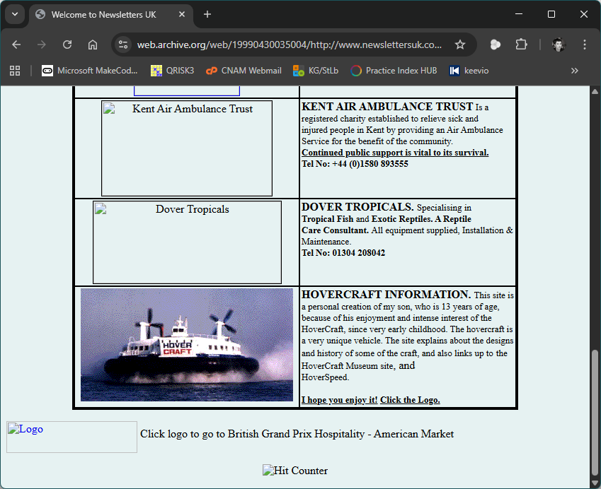
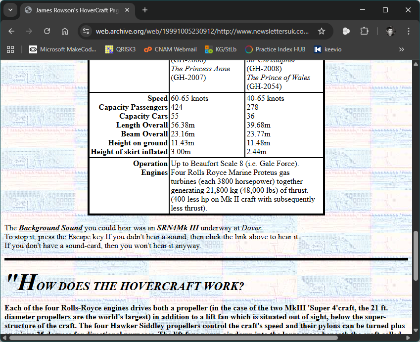
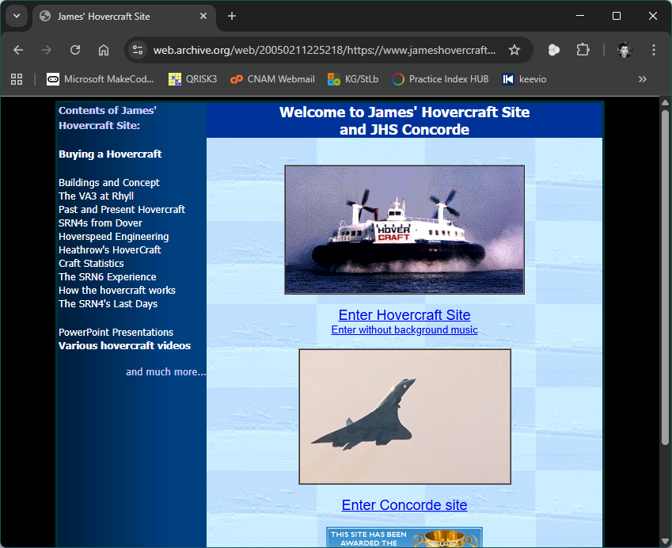
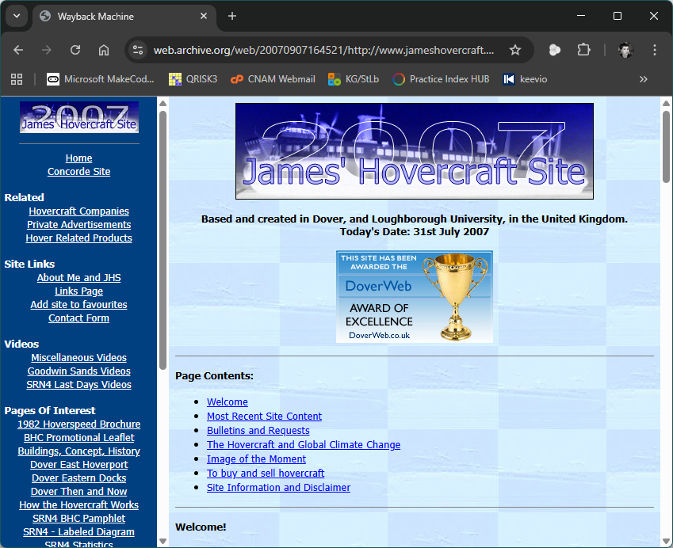
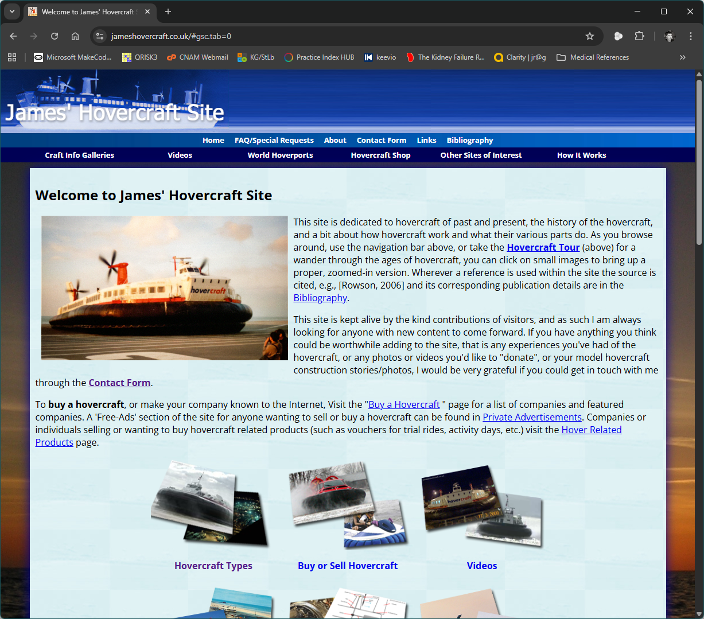

Hovercraft Site
Most people on their 16th birthdays don't get given a domain name and a web-hosting package, but I was one of the lucky ones who did... I'd until then had a website hosted on my father's then-domain, www.newslettersuk.com, basically as a static information page about the SRN4 hovercraft. I had developed it from there as a sort of web blog (though 'blog' didn't exist back then), but then as information was added either by me from experiences or by others from getting in touch with me, it rather ballooned into an information site with photo gallery.
Now, it spans decades of hovercraft history, of both hoverports, and past and present craft, and is viewed regularly across the world, with donations from single images all the way up to over 4000 images from The Hovercraft Museum's digital collection. It is being grown and donated to even to this day. It has had many renditions, from basic HTML, to a Microsoft FrontPage Express website, through to a static .html offering using DreamWeaver, and after the 4000+ images were donated, a PHP/SQL backbone for multiple years until now it sits in its present state using a node.JS and sqlite3 back-end serving up content via a custom-made CMS with help from, let's face it, the game-changer that is Microsoft's GitHub Copilot.

Seen (via the Wayback Machine) as hosted by NewslettersUK.com in 1999 - apologies for the now-broken image links.

Within the website, in 1999 at NewslettersUK

As seen in 2005, under its own new domain name

James' Hovercraft Site in 2007

The website after the php/sql upgrade in 2012

The most current offering, 2026, using Tailwind CSS styling and node.JS/sqlite3 back-end with a custom CMS

The CMS back-end to the website, as of 2026
I hope you have a look around and enjoy the site!